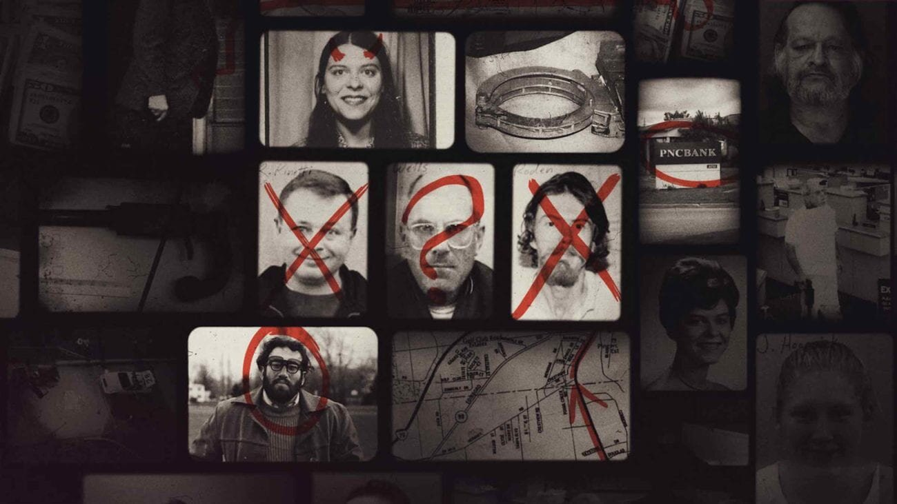

Case Study
Netflix
You can't make this up
Case Study
You can't make this up
In 2018, we were given the privilege to introduce Netflix’s first ever podcast and true crime vertical to the world through the launch of You Can’t Make This Up’s social media. Leaning into the Netflix audiences’ strong devotion to the true crime genre, EA1 worked to bring a passionate and engaged fan base to the handles via a unique social strategy we created.
In order to ensure a seamless launch and thrilling first season, we managed editorial and community, designed gorgeous bespoke creative for all platforms, and captured social exclusive content with talent live onsite during tapings. We took some of the podcast’s hottest takes and used them to create viral moments, uncover hidden gems, and have fun, rewarding fans’ dedication towards true crime and a podcast about it.
Netflix was so pleased with our work on YCMTU that in 2019, they brought us back to work on Our Planet, their original natural history show. While we did not manage the social or community for this brand, Our Planet afforded EA1 the chance to take on a more content-focused project. Our creative team was tasked with working closely with Netflix and their team of freelance editors to ideate, edit, and produce exciting, social-first content. The final results were collaborative, awe-inspiring pieces that truly captured the wonder of our planet.
Both YCMTU and Our Planet were unique experiences for EA1 and we grew significantly as an agency as a result. We continue to incorporate skills and techniques honed on these projects in our current and future work.
